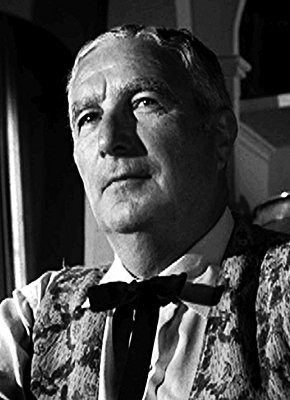

#9569 Cowboy Melodie
Alternativ: Tickle Me


 IMDB-Wertung: 6.0 / 10
IMDB-Wertung: 6.0 / 10  Metascore: 0
Metascore: 0 
Lonnie Beale (Elvis Presley), ein singender Rodeoreiter, wird von der Besitzerin einer Schönheitsfarm als Mitarbeiter angestellt. Alle Damen im Hause sind sofort Feuer und Flamme für ihn, bis auf Pam (Jocelyn Lane), mit der er einfach nicht warm wird. Als aber Einbrecher ausgerechnet bei ihr einsteigen, kann Lonnie Pam retten. Die Einbrecher waren auf der Suche nach dem Brief ihres Großvaters, in dem der das Versteck eines Schatzes beschreibt. Lonnie und Pam freunden sich an und machen sich gemeinsam auf die Suche nach dem verschollenen Erbe des Großvaters.
Jahr: 1965
Dauer: 90 Minuten
FSK:
Land: USA Studio: Allied Artists PicturesTonspuren: DD2.0 - ,
Untertitel: Deutsch,
Auflösung: 1080p (1920x792) Größe: 5969 MB
Genre: Komödie, Western, Liebe, Musical
Regisseur: Norman Taurog
Drehbuch: Elwood Ullman, Edward Bernds
Soundtrack: Walter Scharf
Darsteller:
 Elvis Presley als Lonnie Beale
Elvis Presley als Lonnie Beale Julie Adams als Vera Radford
Julie Adams als Vera Radford- Jocelyn Lane als Pam Merritt
- Jack Mullaney als Stanley Potter
 Merry Anders als Estelle Penfield
Merry Anders als Estelle Penfield- Bill Williams als Deputy Sturdivant
 Edward Faulkner als Brad Bentley
Edward Faulkner als Brad Bentley- Connie Gilchrist als Hilda
- Barbara Werle als Barbara
 John Dennis als Adolph
John Dennis als Adolph- Grady Sutton als Mr. Dabney
- Allison Hayes als Mabel
 Lilyan Chauvin als Ronnie
Lilyan Chauvin als Ronnie- Angela Greene als Donna
- Eve Bruce als Pat (uncredited)
 Bob Hoy als Henry - Gardener (uncredited)
Bob Hoy als Henry - Gardener (uncredited) Kenner G. Kemp als Saloon Patron (uncredited)
Kenner G. Kemp als Saloon Patron (uncredited)- Richard Reeves als Jim - Bartender (uncredited)
- Jackie Russell als Gloria (uncredited)
 Charles Sherlock als Croupier (uncredited)
Charles Sherlock als Croupier (uncredited)-  Carl Sklover als Townsman (uncredited)
 Bert Stevens als Saloon Patron (uncredited)
Bert Stevens als Saloon Patron (uncredited) Jack Tornek als Saloon Patron (uncredited)
Jack Tornek als Saloon Patron (uncredited)- Romo Vincent als Dancing Bit (uncredited)
 Red West als Mabel's Boyfriend (uncredited)
Red West als Mabel's Boyfriend (uncredited)- Francine York als Mildred (uncredited)
- Ines Pedroza als Ophelia
- Dorian Brown als Polly (uncredited)
- Laurie Burton als Janet (uncredited)
- Taggart Casey als Bus Driver (uncredited)
- Louie Elias als Jerry - Gardener (uncredited)
- Jean Ingram als Evelyn (uncredited)
- Dorothy Konrad als Mrs. Dabney (uncredited)
- Ann Morell als Sibyl (uncredited)
- Waclaw Rekwart als Club Patron (uncredited)
- Christopher Riordan als Dancing Bit (uncredited)
- Linda Rogers als Clair Kincannon (uncredited)
- Clark Ross als Townsman (uncredited)
- Peggy Ward als Dot (uncredited)
- Lori Williams als Dancer (uncredited)
Datei: X:\1965\Cowboy Melodie (1965, FSK, 1920x792).mkv seit 11.09.2018
Festplatte: HD 1900-1970
 Es gibt insgesamt 25 Filme in der Gruppe '1965'
Es gibt insgesamt 25 Filme in der Gruppe '1965'